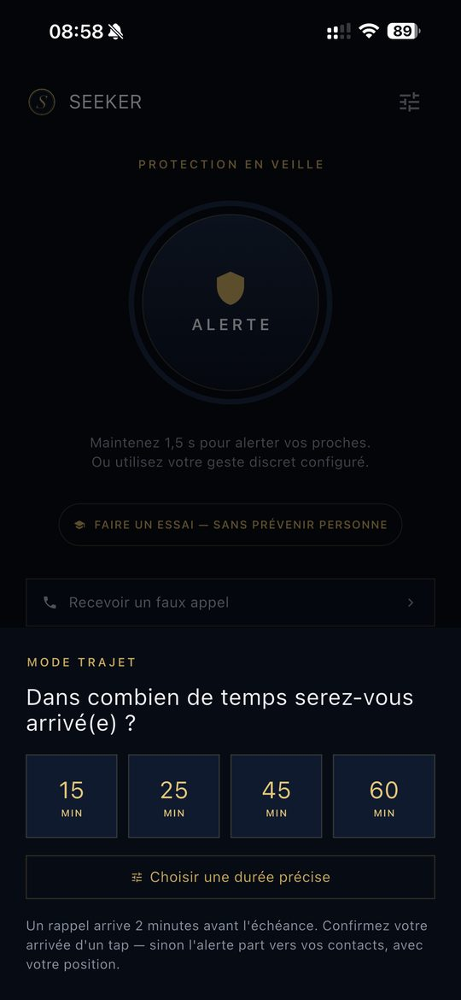
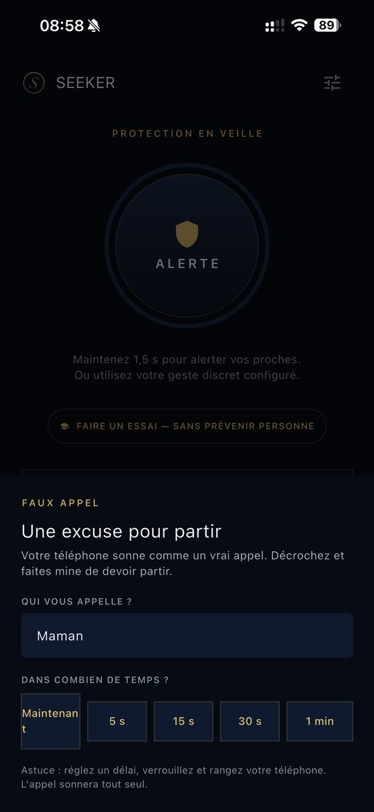

Vos proches savent.
Et savent où.
Seeker envoie une alerte silencieuse à vos contacts de confiance et partage votre position pendant une heure — sans sortir votre téléphone, sans que personne autour de vous ne le remarque.
Le seul bouton d'urgence que vous avez déjà appelle les secours — pas vos proches.
Le SOS natif est un appel, pas une alerte
Le bouton SOS de votre téléphone compose le numéro d'urgence. Utile en cas d'urgence médicale — inadapté quand le danger est social, ambigu, ou que vous n'êtes pas encore sûr·e.
Sortir son téléphone, c'est déjà trop
Dans la majorité des situations à risque, dégainer son téléphone attire l'attention au moment précis où il ne faut pas.
Les proches ne savent jamais où vous êtes
Un appel manqué, un message ambigu — et personne ne sait s'il faut s'inquiéter, ni où chercher.
Vous, au centre. Vos proches, autour.
Une alerte discrète à vos proches et votre position en direct, sans sortir votre téléphone.
Plusieurs gestes possibles. Un seul résultat : vos proches savent, et savent où.
L'application, en treize secondes.
Plutôt que de vous l'expliquer, on vous la montre. Ce sont de vraies captures : l'alerte en cours, la position de la personne qui s'affiche en direct sur une carte, et le lien que reçoivent ses proches. Rien n'est simulé.
-
1
Déclenchement discret Sans sortir le téléphone
Trois appuis sur le bouton latéral, téléphone verrouillé au fond de la poche — configuré une fois à l'installation. À l'écran, une simple app météo comme si de rien n'était.
-
2
Vos contacts de confiance sont prévenus
Vos proches choisis reçoivent le lien de suivi et voient votre position en temps réel — pendant que votre écran reste neutre.
-
3
Suivi pendant 1 heure, prolongeable
Votre position est partagée en direct pendant 60 minutes, prolongeable si besoin, même écran verrouillé. Et avec le mode trajet, l'alerte part toute seule si vous ne confirmez pas votre arrivée à l'heure prévue.
Touchez une fonction, regardez l'écran.



Captures réelles de l'application.
Deux amis de trente ans, et une idée qu'on avait déjà mise de côté une fois.
On travaille tous les deux chez Jobalto, comme Business Managers. On se connaît depuis longtemps, et l'idée de Seeker n'est pas née cette année. Elle nous est venue il y a trois ou quatre ans, à partir d'un constat tout simple : quand quelqu'un qu'on aime est quelque part et qu'on n'a pas de nouvelles, on n'a aucun moyen de savoir. Le bouton d'urgence du téléphone appelle les secours — il ne prévient pas les proches.
À l'époque, on a fait ce que tout le monde fait : on a demandé des devis pour faire développer l'application. La réponse a été plus de 80 000 euros. Pour deux salariés qui n'avaient ni fonds ni investisseur, la conversation s'arrêtait là. On a rangé l'idée dans un coin.
« On nous a dit 80 000 euros. On a fini par le construire nous-mêmes. »
Ce qui a changé, ce n'est pas notre budget — c'est ce qu'on sait faire. À force de formations, de soirées et de week-ends, on a appris à construire ce qu'on voulait au lieu de le commander. Et il y a une chose qu'on doit dire honnêtement : nos patrons y sont pour beaucoup. Ils nous poussent chaque jour à apprendre, à essayer, à créer des choses par nous-mêmes. Sans cette habitude-là, Seeker serait encore une idée rangée dans un coin.
Aujourd'hui l'application existe. Elle tourne sur nos deux téléphones, en français et en néerlandais, avec des données hébergées en Europe. Et elle n'a coûté que du temps.
Simon Hardy
C'est lui qui écrit l'application. Il s'est formé au développement pour ne plus dépendre d'un devis, et construit Seeker sur iPhone et Android en parallèle de son métier.
- L'application, les serveurs, la sécurité des données
- L'architecture technique et les mises à jour
- La conformité RGPD et l'hébergement européen
Johnny Dassonville
C'est lui qui porte Seeker vers l'extérieur. Il ouvre les portes, écoute le terrain, et teste tout ce que Simon construit avant que ça n'arrive chez vous — en parallèle de son métier, lui aussi.
- Les partenariats : mutuelles, communes, employeurs
- La communication et la relation avec les utilisateurs
- Les tests réels, en conditions réelles
Protéger vos proches est gratuit. Le premium, c'est plus de sérénité.
Sans engagement, résiliable à tout moment. Deux mois offerts sur l'abonnement annuel.
- L'essentiel :
- ✓ Déclenchement discret (3× bouton latéral)
- ✓ 1 contact de confiance
- ✓ Suivi de position 60 min
- ✓ Écran leurre + faux appel
- ✓ Protéger vos proches — illimité
- Tout le gratuit, plus :
- ✓ Jusqu'à 5 contacts de confiance
- ✓ Mode trajet automatique
- ✓ Suivi prolongeable
- ✓ Historique des alertes
- Tout Seeker+, pour 5 comptes :
- ✓ Couple, ados, parent âgé, amis
- ✓ Un seul paiement
- ✓ Protection mutuelle du cercle
- ✓ Gestion simple des membres
- Tout Famille & Amis, pour 10 comptes :
- ✓ 1 € par personne et par mois
- ✓ Grande famille, colocation, groupe d'amis
- ✓ Un seul paiement
- ✓ Protection mutuelle du cercle
Paiement sécurisé via Google Play. Prix de lancement — les inscrit·e·s de la liste d'attente en profiteront en premier.
Ce que Seeker fait — et ce qu'il ne prétend pas faire.
Seeker alerte vos proches, pas les secours. En danger immédiat, composez toujours le 112.
Votre position est chiffrée en transit et au repos, hébergée dans l'Union européenne.
La localisation est supprimée après la fenêtre d'alerte.
Aucun suivi en dehors d'une alerte que vous déclenchez vous-même.
On construit Seeker avec les premières personnes qui s'inscrivent.
Aucun spam. Quelques e-mails avant le lancement en Belgique, l'accès aux premiers tests et le prix de lancement garanti.